再び、高雄市に戻ってきた。
超ド定番の
蓮池潭に行ってみることにした。
ここ蓮池潭はかつては高雄市の郊外だったが、今では近くに新幹線の終点の駅（左營駅）が出来、以前にもまして有名な観光スポットになっていた。
池とはいえ、結構広く、1周3.5キロほど。
その池のほとりにかなり奇天烈な巨像や塔などが点在しているのだ。
そんな寺廟を巡ろうと思って久しぶりに蓮池潭に行ってみると、いきなり
露天カラオケがお出迎え。
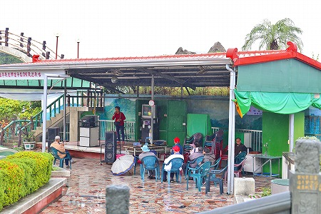
爆音だし、歌下手だし。もう。
楽しそうだからいいけど。
で、気を取り直して最初のチェックポイント。
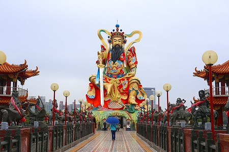
水上に浮かぶ
玄天上帝神像。
高さは20ｍほど。色がド派手なので目立つ目立つ。
橋を渡って玄天上帝神サマへ謁見タイム。
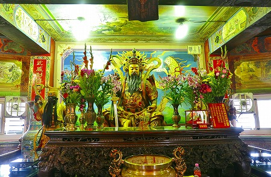
台座の中には御本尊がいらっしゃる。
また像の周囲にはおみくじマシーンが何個かあったのでやってみた。
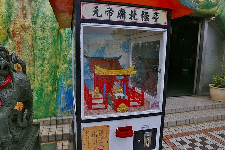
コレはコインを投入すると建物の中から女性が現れておみくじをポトンと手前の四角い箱に落とすタイプ。
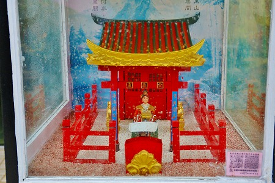
手前の箱は下の受け取り口に直結していて、おみくじを回収するというもの。
日本でも似たようなおみくじマシーンがあるが、女性が手押し車（ネコ）でおみくじを運んでくるのが斬新だ。
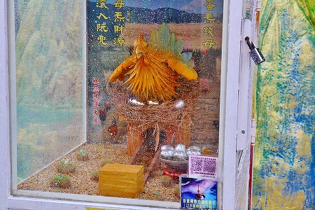
こちらは銀の卵を鳥が落とすタイプ。ええと確か銀の卵ごと受け取り口から出てきた。
ガチャポンみたい。
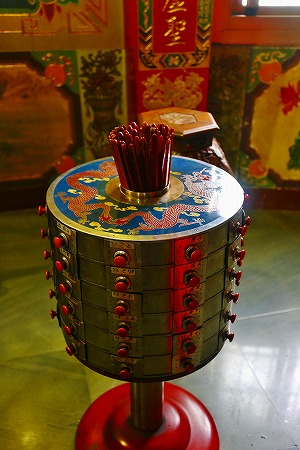
屋内にはもちろんオールドタイプのおみくじもある。
バームクーヘン状の引き出しが斬新だ。
下から見上げると改めてその迫力に慄く。
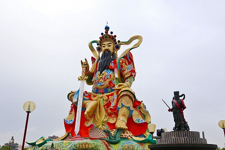
大きさだけでなく、造形、色、持ち物、ポーズ全てにおいて迫力があるのだ。
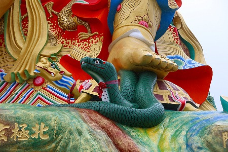
蛇と亀を踏みつけてるし。
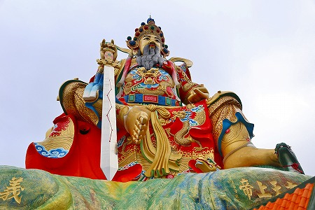
右手で持った刀には7つの星が刻まれている。
七星剣という刀で玄天上帝が必ず持っている武器だ。
北の守り神とされているので北斗七星なのだろう。
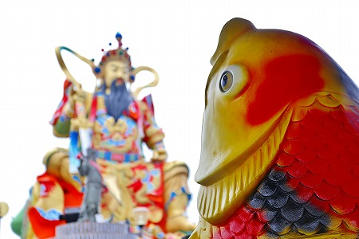
玩具の鯉も開いた口が塞がらない御様子。
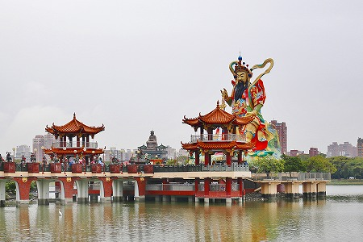
少し離れてみるとこんな感じ。
玄天上帝は水の神でもあるので水上に鎮座しているのはある意味正しいのだ。
そしてその玄天上帝さんの向こうに何か見える！
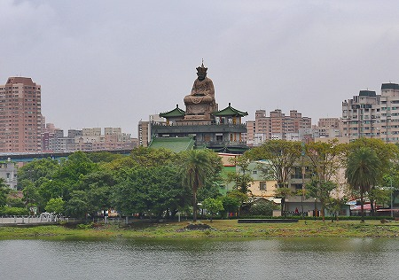
何やら巨大な像が屋上に乗っているではないか！
場所が少し遠かったので行けなかったが、後で調べたら
洲仔清水宮という寺だった。
屋上にいるのは清水祖師というお方。詳細は判んないっす。
さらに池の畔を歩いていくと次に
巨大な龍が見えてくる。
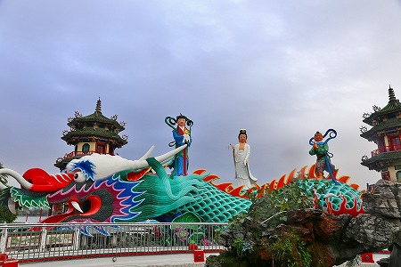
ココは
啓明堂というお寺の一部で、陸側に大きな廟があり、道を挟んだ湖畔にこの龍がいて、その背後に橋が延びていて、春秋閣という見晴堂がある。
龍の大きさは人が数十メートルはあろうかというサイズ。
背中に観音様とその侍者が立っている。
口から中に入ることが出来る。
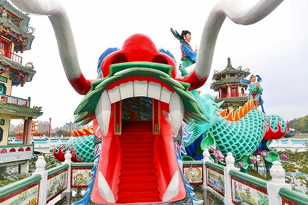
早速龍に呑みこまれてみます。
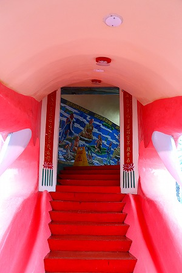
口の中。
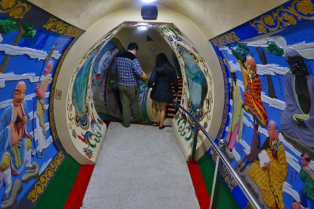
内部はこんな感じ。
人が並んで歩いても窮屈な感じはない。
ただし壁面のレリーフの圧がかなり強めではあるが…。
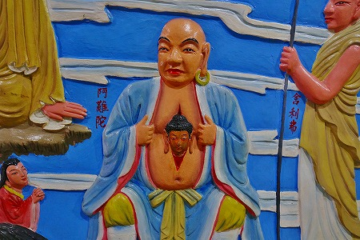
アーナンダ。お腹からどなたか出ちゃってますけど。
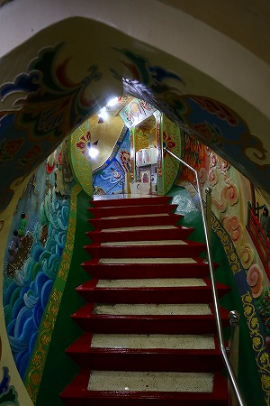
龍の形状に合わせて上ったり下ったり。
中々忙しいのである。
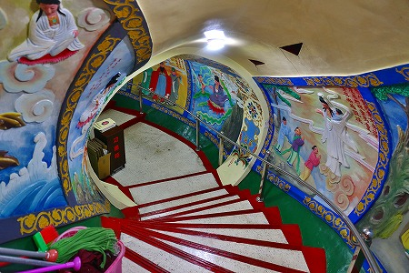
延々とレリーフが続く。
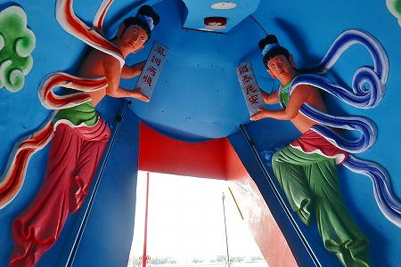
おお、出口だ！
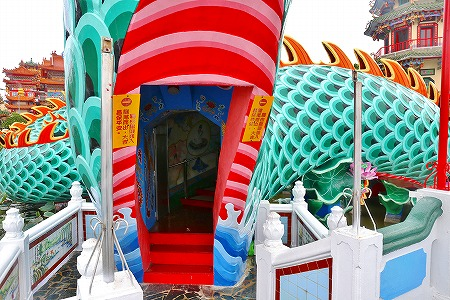
龍の尻尾の方から外に出る。
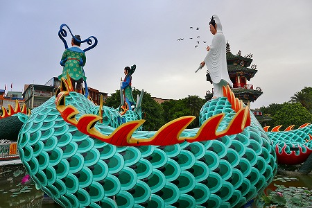
それにしても色鮮やかだ。
頻繁に塗りなおしているのだろうなあ。
で、最後は
龍虎塔。
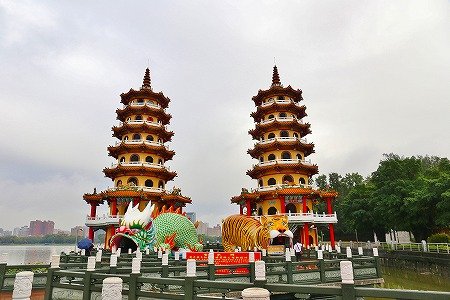
高雄のみならず台湾を代表する風景である。
台湾ツアーのパンフやポスターなどで見たことがある方も多いのではないだろうか？
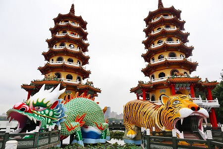
ここは龍の口から入り、左の塔を登り、塔と塔の間の橋を渡り、右の塔を登り、最後に虎の口から出てくるという経路。
龍の口から入らないと災いがあるとか。
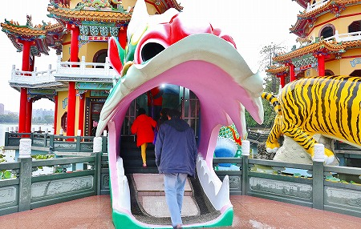
素直に龍の口から入りましょう。
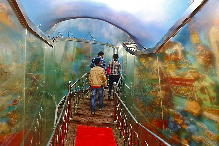
中は先ほどの龍同様、両壁がレリーフで埋め尽くされているのだが、保護用のアクリルの壁がチョット無粋。
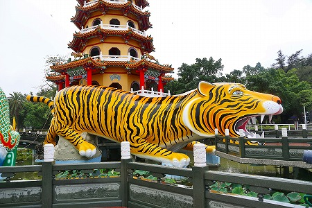
一方通行の経路を上ったり下りたりして参拝するあたり、さざえ堂や大仏の胎内潜りに似ていて中々楽しいものだ。
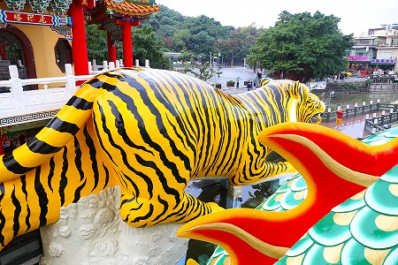
ここも綺麗にケアされている。
さすが台湾を代表する観光施設だ。
それにしてもこの塔が台湾を象徴している、ということはやはり人々の意識の底には台湾＝面白い寺の宝庫、という認識がなされている、という事なのだろうか？
多分そうなんだろうな。
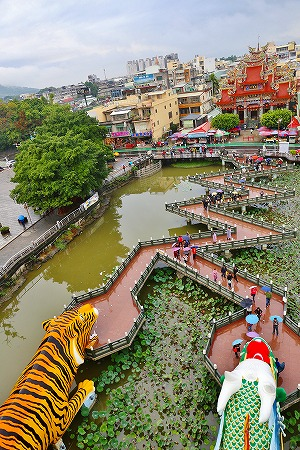
塔の上から見た橋。
くねくね曲がった九曲橋の先には慈済宮という道教寺院が見える。
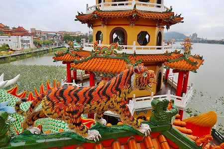
塔の屋根にはそれぞれ龍と虎が乗っかっている。
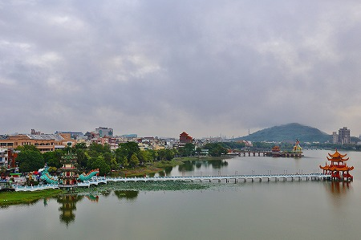
塔の上から池を眺める。
あまり天気は良くないが、気分は爽快だ。
先ほど訪れた啓明堂の龍、春秋閣、さらにその先には玄天上帝神像、さらにその向こうには小さく洲仔清水宮が見えた。
それにしても今回は何度も龍に呑みこまれたなあ〜。
次へGOGO！